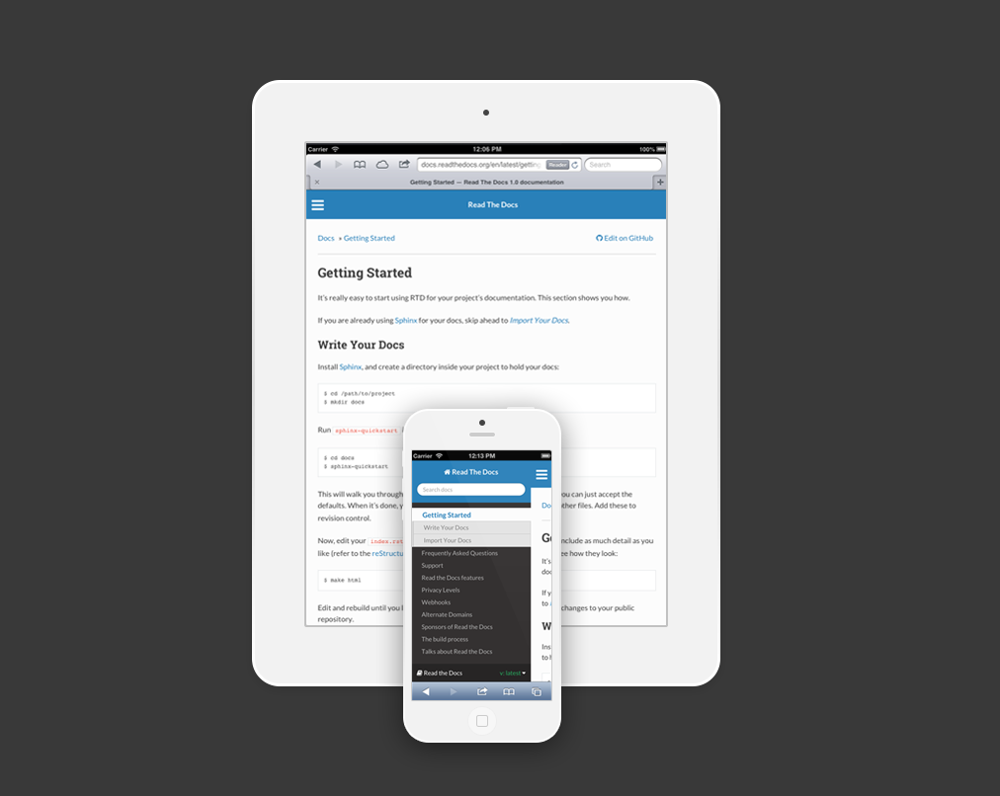

Introduce¶
01. 스핑크스란?¶
스핑크스는 문서를 쉽게 생성할 수 있는 툴로써 다음과 같은 특징이 있다.
- 출력 포맷 : HTML, LaTaX, ePub, 텍스트 정보, 설명서, 계획서
- 다양한 상호참조 : 기능, 인용, 용어집 등을 위한 시멘틱 마크업, 자동 링크.
- 계층 구조 : 문서를 쉽게 생성할 수 있고 자동으로 링크됨.
- 코드 핸들링 : 자동 하이라이팅 기능
- 확장성 : 문서에 파이썬 코드를 추가하거나 로딩 가능.
- 기여 : PyPI를 통해 다양한 다양한 기능들 추가 가능.
02. 스핑크스 설치¶
cmd 창을 열고 pip install sphinx 명령을 입력하고 실행.
Note
- 설치 : pip install sphinx
- 삭제 : pip uninstall sphinx

03. 기본 문서 만들기¶
cmd 창에서 원하는 폴더로 이동후 sphinx-quickstart 명령을 실행.
문서를 생성하기 위한 몇 가지 질문들이 나오고 원하는 값을 입력. [ ]의 값은 기본값이며 엔터를 치면 기본값이 입력됨.
Note
- 문서 만들기 : shpinx-quickstart

- Root path for the documentation [.]
- 루트 디렉토리 지정, 입력값이 없으면 현제 폴더에 생성.
- Sphinx_Tutorial (Sphinx_Tutorial 폴더를 루트로 지정)
- Separate source and build directories (y/n) [n]
- 별도의 소스, 빌드 디렉토리 생성
- n (한 폴더에 빌드와 소스 폴더가 생성.)
- Name prefix for templates and static dir [_]
- static 폴더의 접두사를 정함.
- _(static 폴더 앞에 _이 붙어 _static이 된다.)
- Project name:
- 프로젝트 이름을 정함
- Sphinx_tutorial
- Author name(s):
- 저자 이름
- JEC
- Project version []:
- 버젼 설정
- 0.1 (버전을 0.1로 설정)
- Project release [0.1]:
- 릴리즈 버젼을 설정
- 0.1 (릴리즈 버젼을 0.1로 설정)
- Project language [en]:
- 프로젝트 주 사용 언어 설정
- en (영어를 주언어로 설정)
- Source file suffix
- 소스 파일의 확장자를 설정
- rst (확장자를 rst로 설정)
- Name of your master document (without suffix) [index]:
- 마스터 문서의 이름을 설정
- index (마스터 문서 이름이 index로 설정)
- Do you want to use the epub builder (y/n) [n]:
- ePub 빌더 사용 여부 결정
- n
- autodoc: automatically insert docstrings from modules (y/n) [n]:
- 자동으로 모듈에서 문자 삽입
- y (인덱스에서 모듈명 입력시 자동으로 모듈을 생성)
- doctest: automatically test code snippets in doctest blocks (y/n) [n]:
- 자동으로 코드 발췌를 사용
- n
- intersphinx: link between Sphinx documentation of different projects (y/n) [n]:
- 다른 스핑크스 문서끼리 연결
- y
- todo: write “todo” entries that can be shown or hidden on build (y/n) [n]:
- todo를 보여줄 지 결정
- n
- coverage: checks for documentation coverage (y/n) [n]:
- 문서 커버리지 검사
- n
- imgmath: include math, rendered as PNG or SVG images (y/n) [n]:
- PNG와 SVG를 위한 math, rendered를 첨부
- y
- mathjax: include math, rendered in the browser by MathJax (y/n) [n]:
- 브라우저에 MathJax로 math, rendered를 첨부
- n
- ifconfig: conditional inclusion of content based on config values (y/n) [n]:
- 설정값을 기준으로 조건부를 포함.
- n
- viewcode: include links to the source code of documented Python objects (y/n) [n]:
- 파이썬 객체 문서의 링크를 포함.
- n
- githubpages: create .nojekyll file to publish the document on GitHub pages (y/n)
- 깃허브에서 출력가능한 nojekyll 파일을 만듬
- n
- Create Makefile? (y/n) [y]:
- make 파일을 생성
- y (make 파일을 간편하게 빌드 가능)
- Create Windows command file? (y/n) [y]:
- 윈도우 명령 파일을 생성
- y


05. HTML 생성¶
cmd에서 루트 폴더로 이동후 make html 명령 실행. conf.py 내용을 기반으로 html을 생성. 생성되는 경로는 ‘_bulid’ 폴더 안의 ‘html’ 폴더에 생성됨.
Note
- root 폴더로 이동후 make html
- 앞으로 문서를 수정하면 make html 명령을 실행해서 수정된 내용을 적용
- HTML 문서를 생성하는 과정
{kind=link}
- 생성된 HTML 문서들
{kind=link}
05. 루트 인덱스 문서 실행¶
_bulid 폴더 안의 html 폴더 안에 index.html을 실행시 메인 페이지가 열림. 인터넷 브라우저로 실행 가능.
- 처음 실행하는 인덱스 페이지

06. 테마 적용¶
Sphinx에서 자체적으로 제공하는 테마가 있지만 여기서는 ‘Read the Docs Sphinx Theme’ 테마를 적용함.
{kind=link}
적용할 테마를 다운받아 설치하기 위해 cmd 창에 pip install sphinx_rtd_threme 실행한다.
Note
- 설치 : pip install sphinx_rtd_threme
- 삭제 : pip uninstall sphinx_rtd_threme

루트 디렉토리에서 conf.py 파일을 에디터로 열고 아래와 같이 수정.
- 상단에
import sphinx_rtd_theme추가하여 테마를 불러옴.- 중간부분에
html_theme="sphinx_rtd_theme"으로 수정하여 테마를 지정.- 그리고
html_theme_path = [sphinx_rtd_theme.get_html_theme_path()]추가해서 경로를 지정해줌.
루트 디렉토리의 conf.py 파일 수정
1 2 3 4 5 6 | import os
import sys
import sphinx_rtd_theme
# sys.path.insert(0, os.path.abspath('.'))
|
1 2 3 4 5 6 7 8 9 10 | # a list of builtin themes.
#
html_theme = 'sphinx_rtd_theme'
# Theme options are theme-specific and customize the look and feel of a theme
html_theme_path = [sphinx_rtd_theme.get_html_theme_path()]
# further. For a list of options available for each theme, see the
# documentation.
#
|
수정하고 cmd창에서 ``make html``로 빌드를 실행. 그리고 _bulid/html의 index.html을 실행하면 수정된 테마를 확인 가능.